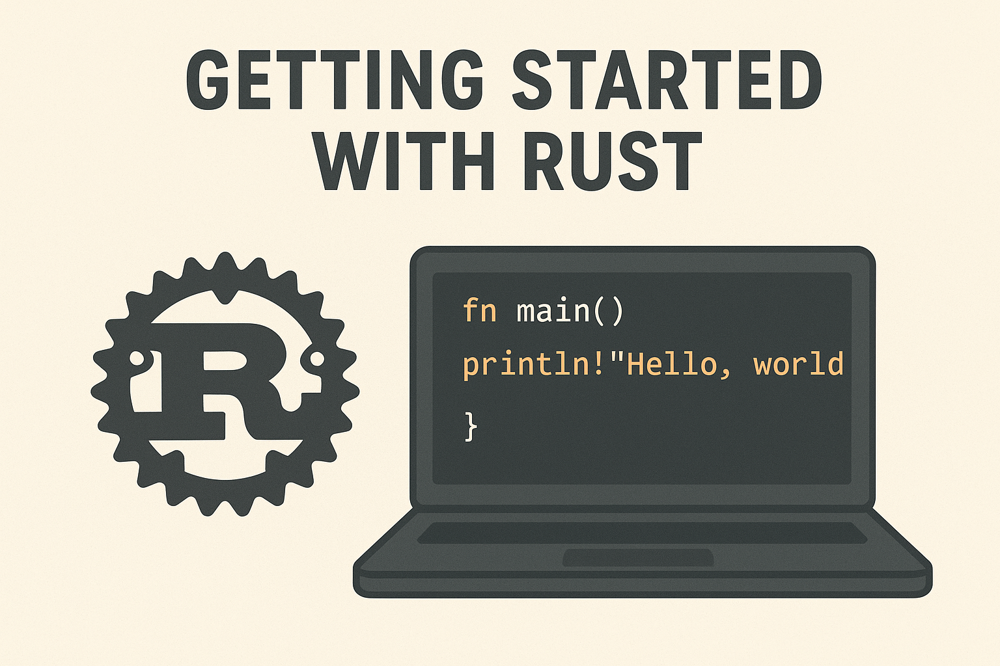

Getting Started with Rust: A Complete Guide

What is Rust?
Rust is a systems programming language that focuses on safety, speed, and concurrency. It prevents common programming errors like null pointer dereferences and buffer overflows at compile time, while delivering performance comparable to C and C++. Rust is ideal for system programming, web backends, command-line tools, network services, and anywhere you need both performance and reliability.
Installation
Installing Rust via Rustup
The easiest way to install Rust is through rustup, the official Rust installer and version manager:
On Linux/macOS:
curl --proto '=https' --tlsv1.2 -sSf https://sh.rustup.rs | shOn Windows: Download and run the installer from rustup.rs
After installation, restart your terminal and verify the installation:
rustc --version
cargo --versionWhat Gets Installed
rustc: The Rust compilercargo: Rust’s package manager and build toolrustup: Tool for managing Rust versions- Standard library documentation
Your First Rust Program
Hello World
Create a new file called main.rs:
fn main() {
println!("Hello, world!");
}Compile and run:
rustc main.rs
./main # On Windows: main.exeUsing Cargo (Recommended)
Cargo is Rust’s build system and package manager. Create a new project:
cargo new hello_rust
cd hello_rustThis creates a project structure:
hello_rust/
├── Cargo.toml
└── src/
└── main.rsRun your project:
cargo runBuild without running:
cargo buildCore Concepts
Variables and Mutability
Variables are immutable by default in Rust:
fn main() {
let x = 5;
// x = 6; // This would cause a compile error
let mut y = 5;
y = 6; // This is fine because y is mutable
println!("x = {}, y = {}", x, y);
}Data Types
Rust has several built-in data types:
fn main() {
// Integers
let integer: i32 = 42;
let unsigned: u32 = 42;
// Floating point
let float: f64 = 3.14;
// Boolean
let is_rust_fun: bool = true;
// Character
let letter: char = 'R';
// String
let greeting: String = String::from("Hello");
let string_slice: &str = "World";
println!("{} {} from Rust!", greeting, string_slice);
}Functions
Functions are declared with the fn keyword:
fn main() {
let result = add_numbers(5, 3);
println!("5 + 3 = {}", result);
}
fn add_numbers(a: i32, b: i32) -> i32 {
a + b // No semicolon means this is the return value
}Control Flow
fn main() {
let number = 6;
// If expressions
if number % 2 == 0 {
println!("{} is even", number);
} else {
println!("{} is odd", number);
}
// Loops
for i in 1..=5 {
println!("Count: {}", i);
}
let mut counter = 0;
while counter < 3 {
println!("Counter: {}", counter);
counter += 1;
}
// Infinite loop with break
loop {
println!("This runs once");
break;
}
}Ownership System
Rust’s ownership system is what makes it memory-safe without a garbage collector:
Basic Ownership Rules
- Each value has a single owner
- When the owner goes out of scope, the value is dropped
- There can only be one owner at a time
fn main() {
let s1 = String::from("hello");
let s2 = s1; // s1 is moved to s2, s1 is no longer valid
// println!("{}", s1); // This would cause a compile error
println!("{}", s2); // This works
let s3 = s2.clone(); // Explicitly clone the data
println!("{} and {}", s2, s3); // Both work now
}Borrowing and References
Instead of moving ownership, you can borrow references:
fn main() {
let s = String::from("hello");
let len = calculate_length(&s); // Borrow s
println!("Length of '{}' is {}", s, len); // s is still valid
}
fn calculate_length(s: &String) -> usize {
s.len()
} // s goes out of scope but doesn't drop the data (it doesn't own it)Error Handling
Rust uses Result<T, E> and Option<T> for error handling:
use std::fs::File;
use std::io::ErrorKind;
fn main() {
// Option example
let numbers = vec![1, 2, 3, 4, 5];
match numbers.get(10) {
Some(value) => println!("Found: {}", value),
None => println!("No value at index 10"),
}
// Result example
let file_result = File::open("hello.txt");
match file_result {
Ok(file) => println!("File opened successfully"),
Err(error) => match error.kind() {
ErrorKind::NotFound => println!("File not found"),
_ => println!("Error opening file: {:?}", error),
},
}
}Working with Collections
Vectors
fn main() {
let mut numbers = vec![1, 2, 3];
numbers.push(4);
for number in &numbers {
println!("{}", number);
}
println!("Third element: {}", numbers[2]);
}HashMaps
use std::collections::HashMap;
fn main() {
let mut scores = HashMap::new();
scores.insert("Blue", 10);
scores.insert("Red", 50);
for (team, score) in &scores {
println!("{}: {}", team, score);
}
}Structs and Enums
Structs
struct Person {
name: String,
age: u32,
email: String,
}
impl Person {
fn new(name: String, age: u32, email: String) -> Person {
Person { name, age, email }
}
fn greet(&self) {
println!("Hello, my name is {}", self.name);
}
}
fn main() {
let person = Person::new(
String::from("Alice"),
30,
String::from("alice@example.com")
);
person.greet();
}Enums
enum Message {
Quit,
Move { x: i32, y: i32 },
Write(String),
ChangeColor(i32, i32, i32),
}
impl Message {
fn call(&self) {
match self {
Message::Quit => println!("Quitting"),
Message::Move { x, y } => println!("Moving to ({}, {})", x, y),
Message::Write(text) => println!("Writing: {}", text),
Message::ChangeColor(r, g, b) => println!("Changing color to ({}, {}, {})", r, g, b),
}
}
}
fn main() {
let msg = Message::Write(String::from("Hello"));
msg.call();
}Package Management with Cargo
Adding Dependencies
Edit your Cargo.toml file to add dependencies:
[dependencies]
serde = "1.0"
tokio = { version = "1.0", features = ["full"] }Then run:
cargo buildCommon Cargo Commands
cargo new project_name- Create a new projectcargo build- Compile the projectcargo run- Compile and run the projectcargo test- Run testscargo doc --open- Generate and open documentationcargo update- Update dependenciescargo clean- Remove build artifacts
Development Tools
Formatting
Format your code automatically:
cargo fmtLinting
Check for common mistakes and style issues:
cargo clippyTesting
Write tests in the same file or separate test modules:
fn add(a: i32, b: i32) -> i32 {
a + b
}
#[cfg(test)]
mod tests {
use super::*;
#[test]
fn test_add() {
assert_eq!(add(2, 3), 5);
}
}Run tests with:
cargo testNext Steps
Learning Resources
- The Rust Programming Language Book - The official book, available online for free
- Rust by Example - Learn Rust through practical examples
- Rustlings - Small exercises to get you used to Rust syntax
- The Rust Reference - Detailed language reference
- Rust Standard Library Documentation - Comprehensive API documentation
Practice Projects
- Command-line calculator - Practice basic syntax and user input
- File organizer - Learn file I/O and error handling
- Web scraper - Work with HTTP requests and HTML parsing
- Simple web server - Understand concurrency and networking
- Game of Life - Practice with 2D arrays and algorithms
Join the Community
- Rust Users Forum - Ask questions and share knowledge
- Reddit r/rust - Community discussions and news
- Discord/IRC - Real-time chat with other Rust developers
- Local Rust meetups - Find Rust developers in your area
Tips for Success
- Embrace the compiler - Rust’s compiler provides excellent error messages. Read them carefully
- Start small - Begin with simple programs and gradually increase complexity
- Practice ownership - The ownership system is unique to Rust, so it takes time to internalize
- Use the standard library - Rust has a rich standard library with excellent documentation
- Don’t fight the borrow checker - Learn to work with Rust’s safety guarantees rather than against them
The Rust compiler is your friend and will help you write safe, fast code. Take time to understand the error messages, and don’t hesitate to refer to the official documentation when you’re stuck. Happy coding!